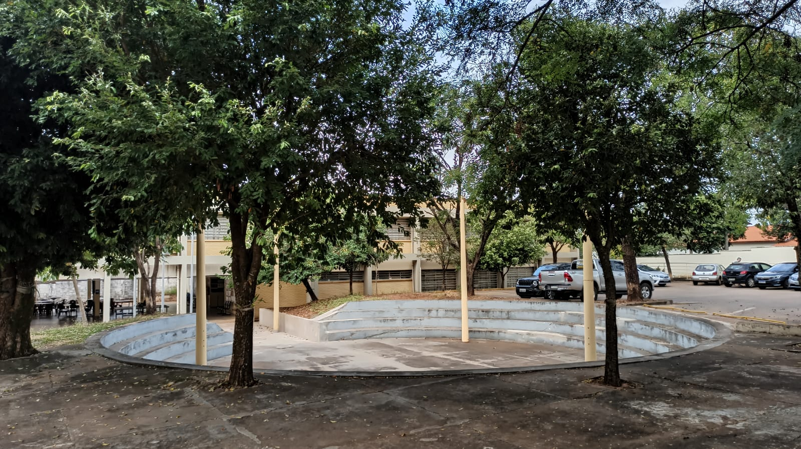
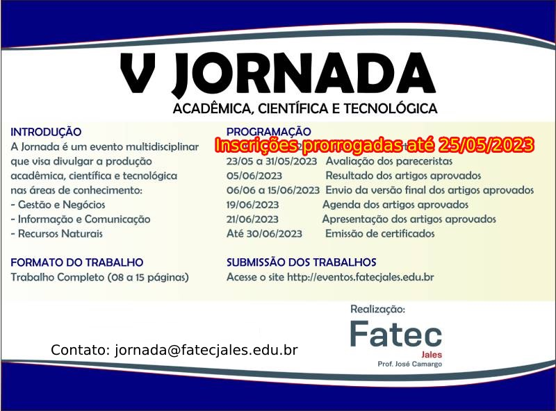

SOBRE A FATEC JALES!
A Fatec Jales, criada pelo Decreto nº 52.122, de 3 de setembro de 2007, publicado no DOE de 4 de setembro de 2007, iniciou suas atividades em 10 de setembro de 2007, instalada em espaço concedido à Secretaria da Ciência, Tecnologia e Desenvolvimento Econômico pela Secretaria da Educação, de acordo com Decreto 51.068 de 24 de agosto de 2006. O curso superior inicial oferecido foi de Tecnologia em Agronegócio, com 80 vagas semestrais, sendo 40 no período matutino e 40 no período noturno, com a duração de seis semestres. No primeiro semestre de 2010, foi implantado o curso de Tecnologia em Sistemas para Internet, com 70 vagas semestrais, sendo 35 no período vespertino e 35 no período noturno, também com duração de seis semestres. A partir do primeiro semestre de 2013, o curso de Sistemas para Internet passou a ser oferecido nos períodos matutino e noturno.
IMPORTANTE!
A CEPE - Câmara de Ensino, Pesquisa e Extensão da Fatec Jales informa, para fins de divulgação, que foram prorrogadas as submissões de artigos para a V JORNADA ACADÊMICA, CIENTÍFICA E TECNOLÓGICA, até o dia 25/05/2023.
aaaaaaaaaaaaaaaaaaaaaaaaaaaaaaaaaaaaaaaaaaaa ㅤCom o objetivo de melhor atender à comunidade acadêmica e oferecer um
aaaaaaaaaaaaaaaaaaaaaaaaaaaaaaaaaaaaaaaaaaaa ㅤensino superior público de excelência, o Governo do Estado de São Paulo
aaaaaaaaaaaaaaaaaaaaaaaaaaaaaaaaaaaaaaaaa aaaㅤinvestiu mais de R$ 4 milhões em obras de adequação e melhorias em toda
aaaaaaaaaaaaaaaaaaaaaaaaaaaaaaaaaaaaaaaaaaaa ㅤestrutura física, sendo realizada entre 2012 e 2014; dessa maneira, a
aaaaaaaaaaaaaaaaaaaaaaaaaaaaaaaaaaaaaaaaaaaa ㅤcomunidade escolar pode usufruir das novas instalações que favorecem o
aaaaaaaaaaaaaaaaaaaaaaaaaaaaaaaaaaaaaaaaaaaa ㅤprocesso de ensino e aprendizagem dos cursos já oferecidos e de outros
aaaaaaaaaaaaaaaaaaaaaaaaaaaaaaaaaaaaaaaaaaaa ㅤfuturos. Nessa obra, todo prédio foi adaptado para oferecer acessibilidade
aaaaaaaaaaaaaaaaaaaaaaaaaaaaaaaaaaaaaaaaaaaa ㅤaos usuários.